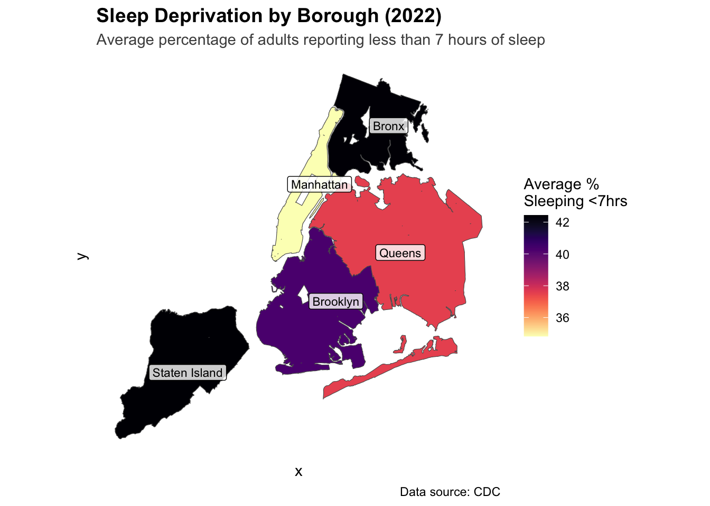
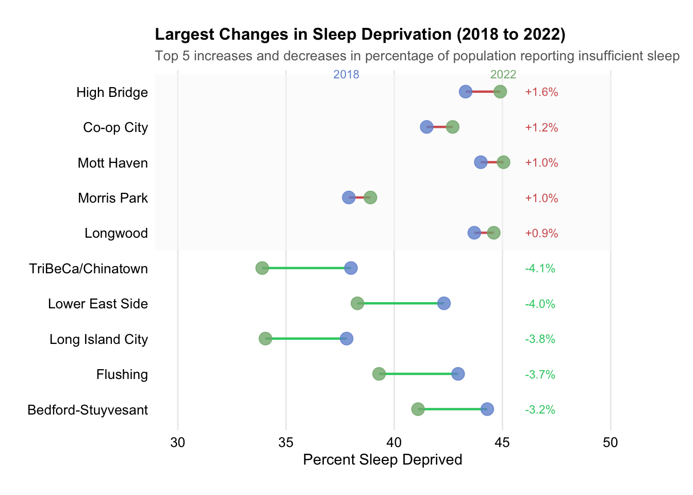
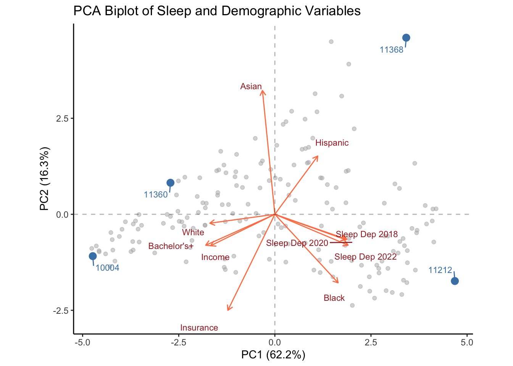

Before diving in, let’s start by exploring what sleep deprivation trends looked like over the past 6 years (3 time points) for each borough.
Code
library(tidyverse)library(scales)library(ggplot2)# Read and reshape the data by boroughsleep_data <-read.csv("data/sleep_health_final_dataset.csv") |>group_by(borough) |>summarise(sleep18_2018 =mean(perc_sleep18),sleep18_2020 =mean(perc_sleep20),sleep18_2022 =mean(perc_sleep22) ) |>pivot_longer(cols =-borough,names_to ="measure",values_to ="percentage" ) |>mutate(year =case_when(str_detect(measure, "2018") ~2018,str_detect(measure, "2020") ~2020,str_detect(measure, "2022") ~2022 ) )# Create the plot with multiple lines by boroughggplot(sleep_data, aes(x = year, y = percentage, color = borough, group = borough)) +geom_line(linewidth =1) +geom_point(size =3) +scale_y_continuous(limits =c(30, 45),labels =function(x) paste0(x, "%"),breaks =seq(30, 45, by =5) ) +scale_x_continuous(breaks =c(2018, 2020, 2022)) +scale_color_brewer(palette ="Set2") +labs(title ="Sleep Deprivation Trends by Borough in NYC (2018-2022)",subtitle ="Percentage of adults sleeping less than 7 hours per night",x ="Year",y ="Percentage of Population (per ZCTA)",color ="Borough",caption ="Data source: CDC" ) +theme_minimal() +theme(plot.title =element_text(face ="bold", size =14),plot.subtitle =element_text(color ="gray30"),axis.title =element_text(face ="bold"),panel.grid.minor =element_blank(),plot.caption =element_text(color ="gray30", hjust =0),legend.position ="right" )
Overall, across boroughs, we see a decrease in short sleep prevalence in 2020. This makes a lot of sense given the COVID-19 pandemic and resulting lockdown.
Manhattan appears to be the most well-rested (aka show the lowest population percentage of short sleep prevalence)
Interestingly, most boroughs differences in short sleep prevalence remain consistent, but the Bronx shows a steep increase between 2020 and 2022, catching up to short sleep prevalence rates in Staten Island despite having been lower than the previous 2 year time points.
Let’s now look at 2022 data on the map to see what it looks like geographically!
Code
library(sf)library(viridis)sleep_health_data_geo <-st_read("data/sleep_health_geo_dataset.shp", quiet =TRUE)library(ggrepel)# Borough-level view with neighborhood labelssleep_health_data_geo |>group_by(borough) |>summarise(avg_sleep =mean(prc_s22),.groups ="drop" ) |>ggplot() +geom_sf(aes(fill = avg_sleep)) +geom_sf_label(aes(label = borough), size =3,alpha =0.8) +scale_fill_viridis(option ="magma",name ="Average %\nSleeping <7hrs",direction =-1# Added this line to flip the scale ) +theme_minimal() +labs(title ="Sleep Deprivation by Borough (2022)",subtitle ="Average percentage of adults reporting less than 7 hours of sleep",caption ="Data source: CDC" ) +theme(plot.title =element_text(face ="bold", size =14),plot.subtitle =element_text(color ="gray30"),legend.position ="right",panel.grid =element_blank(),axis.text =element_blank() )

Replicating what we saw in the line graph above, we see that the Bronx and Staten Island had very similar rates of short sleep prevalence, denoted by the similar dark purple/black color.
However, another thing made clear in this graph (especially for those who are familiar with NYC) is that analyzing/exploring these data at the borough-level might be a bit too reductionist or over simplistic. This is made evident by the stark cuts in color across the map. Let’s fine grain our analysis further to possibly reveal more subtle or nuanced patterns.
3.2 Sleep Trends by Neighborhood
Code
library(sf)library(viridis) # Basic choropleth of 2022 sleep deprivation ratesggplot() +geom_sf(data = sleep_health_data_geo,aes(fill = prc_s22),color ="white",size =0.1) +scale_fill_viridis(option ="magma",name ="% Adults\nSleeping <7hrs",limits =c(25, 50),direction =-1# Added this line to flip the scale ) +theme_minimal() +labs(title ="Sleep Deprivation Rates Across NYC Zip Code Areas (2022)",subtitle ="Percentage of adults reporting less than 7 hours of sleep per night",caption ="Data source: CDC" ) +theme(plot.title =element_text(face ="bold", size =14),plot.subtitle =element_text(color ="gray30"),legend.position ="right",panel.grid =element_blank(),axis.text =element_blank() )
Above you now see a heatmap of NYC short sleep prevalence at a much more fine-grain level, that is the Zip Code Tabulation Area (ZCTA) level (essentially very similar to how you think of zipcodes but just modified to accommodate an geoographic area vs a single point coordinate).
As you can see this reveals a much richer analysis of short sleep prevalence patterns (with darker color indicating greater short sleep prevalence or more sleep deprived people in that area).
An interesting pattern to notice here is the gradient color effect that occurs throughout the city, basically that you don’t see a stark jump from one color to another in neighboring zip code areas. This strengthens (though does not definitively confirm) the idea that there may be geographic factors at play that influence sleep patterns, given that zip code areas closer together tend to trend in the same direction.
Now let’s explore how these zip code areas shift over time!
3.2.1 Neighborhood Sleep Trends Over Time
Code
# Faceted version showing change over timesleep_health_data_geo_long <- sleep_health_data_geo |>pivot_longer(cols =c(prc_s18, prc_s20, prc_s22),names_to ="year",values_to ="sleep_perc" ) |>mutate(year =case_when( year =="prc_s18"~"2018", year =="prc_s20"~"2020", year =="prc_s22"~"2022" ))ggplot() +geom_sf(data = sleep_health_data_geo_long,aes(fill = sleep_perc),color ="white",size =0.1) +scale_fill_viridis(option ="magma",name ="% Adults\nSleeping <7hrs",limits =c(25, 50),direction =-1# Added this line to flip the scale ) +facet_wrap(~year) +theme_minimal() +labs(title ="Changes in Sleep Deprivation Across NYC (2018-2022)",subtitle ="Percentage of adults reporting less than 7 hours of sleep per night",caption ="Data source: CDC" ) +theme(plot.title =element_text(face ="bold", size =14),plot.subtitle =element_text(color ="gray30"),legend.position ="right",panel.grid =element_blank(),axis.text =element_blank() )
Because NYC has 177 zipcode areas, it would be too visually overwhelming to explore this data with each ZCTA as its own line on a multi-line plot. Instead, what we have visualized above is the same heat map of short sleep prevalence, with 1 plot per year.
We see the same 2020 trend where sleep improves across the board (as you can see from the whole map become shades lighter in 2020), but a new pattern becomes clear that was obscured by the overall borough trends over time in the line graph earlier.
While all ZCTAs experienced a decrease in short sleep prevalence during the pandemic, there is an interesting pattern that emerges in 2022 where the ZCTAs who were sleeping fairly better did not bounce all the way back to their pre-pandemic levels (aka maintained sleep health gains from 2020), but for ZCTAs that had really high short sleep prevalence (>45%, indexed by the deep dark purple color), their short sleep prevalence had returned to pre-pandemic level.
While there is no data to support this, anecdotally we can intuit that remote/work from home flexibility is often afforded to higher paying jobs vs. lower paying jobs and disparities. It would be interesting to see how long this “pandemic” sleep effect lasts. The most recent data release is data from 2022 so other people should definitely continue to explore this as more data becomes available!
At this point, we have a rough sense ofwherethere was greater short sleep prevalence, but let’s zoom in closer and see which exact neighborhood changed the most across the years.
3.2.2 Which neighborhoods experienced the greatest changes in sleep deprivation patterns between 2018, 2020 and 2022?
Note:Below we will aggregate by neighborhood instead of ZCTA since these neighborhood names may be more readily recognizable than ZCTAs
Code
# Load and prepare the datadf <-read.csv("data/sleep_health_final_dataset.csv")# Calculate mean sleep deprivation by neighborhood for each yearneighborhood_sleep <-aggregate(cbind(perc_sleep18, perc_sleep20, perc_sleep22) ~ neighborhood, data = df, FUN = mean)# Calculate changesneighborhood_sleep$change_18_20 <- neighborhood_sleep$perc_sleep20 - neighborhood_sleep$perc_sleep18neighborhood_sleep$change_20_22 <- neighborhood_sleep$perc_sleep22 - neighborhood_sleep$perc_sleep20# Get top 10 decreases for 2018-2020top_10_decrease <- neighborhood_sleep[order(neighborhood_sleep$change_18_20), ][1:10, ]top_10_decrease$neighborhood <-factor(top_10_decrease$neighborhood, levels =rev(top_10_decrease$neighborhood))# Get top 10 increases for 2020-2022top_10_increase <- neighborhood_sleep[order(-neighborhood_sleep$change_20_22), ][1:10, ]top_10_increase$neighborhood <-factor(top_10_increase$neighborhood, levels =rev(top_10_increase$neighborhood))# Define muted colorscolor_2018 <-"#7294d4"# muted bluecolor_2020 <-"#d4827e"# muted redcolor_2022 <-"#82b37d"# muted green# First plot (2018-2020)ggplot(top_10_decrease, aes(y = neighborhood)) +geom_segment(aes(x = perc_sleep18, xend = perc_sleep20, yend = neighborhood), color ="#cccccc", size =0.8) +geom_point(aes(x = perc_sleep18), color = color_2018, size =4, alpha =0.8) +geom_point(aes(x = perc_sleep20), color = color_2020, size =4, alpha =0.8) +theme_minimal() +labs(title ="Top 10 Largest Decreases in Sleep Deprivation (2018 to 2020)",subtitle ="Percentage of population reporting insufficient sleep",x ="Percent Sleep Deprived",y =NULL ) +theme(panel.grid.major.y =element_blank(),panel.grid.minor =element_blank(),axis.text.y =element_text(size =10, color ="black"),axis.text.x =element_text(size =10, color ="black"),plot.title =element_text(size =12, face ="bold"),plot.subtitle =element_text(size =10, color ="grey40"),plot.margin =margin(20, 20, 20, 20) ) +scale_x_continuous(limits =function(x) c(min(x) -5, max(x) +5)) +coord_cartesian(clip ="off") +annotate("text", x =mean(top_10_decrease$perc_sleep20), # Changed to align with red dotsy =10, label ="2020", color = color_2020,hjust =1, # Center alignsize =4) +annotate("text", x =mean(top_10_decrease$perc_sleep18), # Changed to align with blue dotsy =10, label ="2018", color = color_2018,hjust =-1.2, # Center alignsize =4)
Code
# Second plot (2020-2022)ggplot(top_10_increase, aes(y = neighborhood)) +geom_segment(aes(x = perc_sleep20, xend = perc_sleep22, yend = neighborhood), color ="#cccccc", size =0.8) +geom_point(aes(x = perc_sleep20), color = color_2020, size =4, alpha =0.8) +geom_point(aes(x = perc_sleep22), color = color_2022, size =4, alpha =0.8) +theme_minimal() +labs(title ="Top 10 Largest Increases in Sleep Deprivation (2020 to 2022)",subtitle ="Percentage of population reporting insufficient sleep",x ="Percent Sleep Deprived",y =NULL ) +theme(panel.grid.major.y =element_blank(),panel.grid.minor =element_blank(),axis.text.y =element_text(size =10, color ="black"),axis.text.x =element_text(size =10, color ="black"),plot.title =element_text(size =12, face ="bold"),plot.subtitle =element_text(size =10, color ="grey40"),plot.margin =margin(20, 20, 20, 20) ) +scale_x_continuous(limits =function(x) c(min(x) -5, max(x) +5)) +coord_cartesian(clip ="off") +annotate("text", x =mean(top_10_increase$perc_sleep20), y =10, label ="2020", color = color_2020, hjust =1.2, size =4) +annotate("text", x =mean(top_10_increase$perc_sleep22), y =10, label ="2022", color = color_2022, hjust =-1, size =4)
These are all neighborhoods located in the Bronx, one of New York City’s five boroughs. Specifically, these neighborhoods are concentrated in the South Bronx region. The South Bronx has historically been one of the most socioeconomically challenged areas in New York City, though it has undergone significant changes and development efforts in recent decades.
All these neighborhoods being in the Bronx is in line (hah, no pun intended!) with the multi-line plot we saw earlier where there was a steep increase in short sleep prevalence for the Bronx between 2020 and 2022, so much so that average 2022 levels were greater than average 2018 levels. A stark counter pattern to a lot of other neighborhood as you’re about to see in the 2018 to 2022 comparisons below..
Code
# Calculate mean sleep deprivation by neighborhood for each yearneighborhood_sleep <-aggregate(cbind(perc_sleep18, perc_sleep22) ~ neighborhood,data = df,FUN = mean)# Calculate total change and get top 10 by absolute changeneighborhood_sleep$total_change <- neighborhood_sleep$perc_sleep22 - neighborhood_sleep$perc_sleep18# Split into increases and decreasesincreases <- neighborhood_sleep[neighborhood_sleep$total_change >0, ]decreases <- neighborhood_sleep[neighborhood_sleep$total_change <0, ]# Get top 5 from eachtop_5_increases <- increases[order(-increases$total_change), ][1:5, ]top_5_decreases <- decreases[order(decreases$total_change), ][1:5, ]# Combine and ordertop_changes <-rbind(top_5_increases, top_5_decreases)top_changes$change_type <-ifelse(top_changes$total_change >0, "Increased", "Decreased")# Create factor with custom orderingtop_changes$neighborhood <-factor(top_changes$neighborhood,levels =c(rev(top_5_decreases$neighborhood), rev(top_5_increases$neighborhood)))# Define a brighter green for improvementsbright_green <-"#2ecc71"# A more distinct green colorggplot(top_changes, aes(y = neighborhood)) +# Add colored background for increase/decrease sectionsannotate("rect", ymin =5.5, ymax =10.5,xmin =-Inf, xmax =Inf,fill ="#f8f8f8", alpha =0.5) +# Original plot elementsgeom_segment(aes(x = perc_sleep18, xend = perc_sleep22,yend = neighborhood,color = change_type),size =0.8) +geom_point(aes(x = perc_sleep18), color = color_2018, size =4, alpha =0.8) +geom_point(aes(x = perc_sleep22), color = color_2022, size =4, alpha =0.8) +# Add absolute change valuesgeom_text(aes(x =max(c(perc_sleep18, perc_sleep22)) +1,label =sprintf("%+.1f%%", total_change),color = change_type),hjust =0, size =3) +# Updated year labelsgeom_text(data =data.frame(x =min(top_changes$perc_sleep18),y =max(as.numeric(top_changes$neighborhood)) +0.5),aes(x = x, y = y),label ="2018",color = color_2018,hjust =0.5,size =3) +geom_text(data =data.frame(x =max(top_changes$perc_sleep22),y =max(as.numeric(top_changes$neighborhood)) +0.5),aes(x = x, y = y),label ="2022",color = color_2022,hjust =0.5,size =3) +# Themingscale_color_manual(values =c("Increased"="#d35f5f", "Decreased"= bright_green),guide ="none") +scale_y_discrete() +theme_minimal() +labs(title ="Largest Changes in Sleep Deprivation (2018 to 2022)",subtitle ="Top 5 increases and decreases in percentage of population reporting insufficient sleep",x ="Percent Sleep Deprived",y =NULL ) +theme(panel.grid.major.y =element_blank(),panel.grid.minor =element_blank(),axis.text.y =element_text(size =10, color ="black"),axis.text.x =element_text(size =10, color ="black"),plot.title =element_text(size =12, face ="bold"),plot.subtitle =element_text(size =10, color ="grey40"),plot.margin =margin(t =20, r =60, b =20, l =20, unit ="pt") # Reduced left margin ) +scale_x_continuous(limits =c(min(top_changes$perc_sleep18, top_changes$perc_sleep22) -4,max(top_changes$perc_sleep18, top_changes$perc_sleep22) +4 ) ) +coord_cartesian(clip ="off")

Interestingly, once we move onto comparisons between 2018 and 2022, the top 10 neighborhoods that show the greatest changes are no longer unidirectional (as compared to the previous 2 dot plots). There is certainly a lot to unpack here!
Clear geographic disparity: Manhattan and Queens neighborhoods saw significant improvements (3-4% decrease in sleep deprivation), while Bronx neighborhoods showed deterioration (1-1.6% increase)
Potential socioeconomic divide: Improvements concentrated in more affluent areas (TriBeCa, Lower East Side) while historically underserved communities saw worse sleep patterns
COVID-19 and WFH impact: Areas with high concentrations of knowledge workers who could work from home (e.g., TriBeCa, Lower East Side) saw the biggest improvements, while areas with more essential workers (Bronx) saw deterioration
Population shifts may be a factor: Changes could partly reflect pandemic-era migration patterns and housing market changes rather than just changes in sleep behavior of existing residents
Now that we’ve looked deeply into patterns of change, let’s explore overall which neighborhoods are sleeping more than others.
3.2.3 Which neighborhoods are sleeping the most?
Code
# Neighborhood-level view labeling areas with best sleepsleep_health_data_geo |>group_by(borough) |># Get bottom 3 neighborhoods per borough (lowest sleep deprivation = best sleep)mutate(should_label =rank(prc_s22, ties.method ="random") <=3# Changed from -prc_s22 to prc_s22 to get lowest values ) |>ungroup() |>ggplot() +geom_sf(aes(fill = prc_s22)) +geom_label_repel(data = . %>%filter(should_label),aes(label = nghbrhd,geometry = geometry ),stat ="sf_coordinates",size =2.5,alpha =0.9,box.padding =0.5,point.padding =0.2,max.overlaps =30,force =10 ) +scale_fill_viridis(option ="magma",name ="Average %\nSleeping <7hrs",direction =-1 ) +theme_minimal() +labs(title ="Sleep Deprivation by NYC Neighborhood (2022)",subtitle ="Labels shown for three neighborhoods with lowest sleep deprivation per borough",caption ="Data source: CDC" ) +theme(plot.title =element_text(face ="bold", size =14),plot.subtitle =element_text(color ="gray30"),legend.position ="right",panel.grid =element_blank(),axis.text =element_blank() )
3.2.4 Which neighborhoods are sleeping the least?
Code
# Neighborhood-level view with selective repelling labelssleep_health_data_geo |>group_by(borough) |># Get top 3 neighborhoods per boroughmutate(should_label =rank(-prc_s22, ties.method ="random") <=3 ) |>ungroup() |>ggplot() +geom_sf(aes(fill = prc_s22)) +geom_label_repel(data = . %>%filter(should_label),aes(label = nghbrhd,geometry = geometry ),stat ="sf_coordinates",size =2.5,alpha =0.9,box.padding =0.5,point.padding =0.2,max.overlaps =30,force =10 ) +scale_fill_viridis(option ="magma",name ="Average %\nSleeping <7hrs",direction =-1 ) +theme_minimal() +labs(title ="Sleep Deprivation by NYC Neighborhood (2022)",subtitle ="Labels shown for three neighborhoods with highest sleep deprivation per borough",caption ="Data source: CDC" ) +theme(plot.title =element_text(face ="bold", size =14),plot.subtitle =element_text(color ="gray30"),legend.position ="right",panel.grid =element_blank(),axis.text =element_blank() )
Now that we have a sense of sleep deprivation over time and by neighborhood, let’s explore its relationship with some demographic data..
3.3 How do the various racial and socioeconomic demographics relate to sleep deprivation?
3.3.1 Principal Component Analysis Biplot
Code
df <-read.csv("data/sleep_health_final_dataset.csv")# Create the subset with the same variables as beforesleep_health_subset <- df |>mutate(perc_white = white / nh_total *100,perc_black = black / nh_total *100,perc_asian = asian / nh_total *100,perc_hispanic = hispanic / total *100,inc_mean =as.numeric(inc_mean),ins_total =as.numeric(ins_total),perc_ba_plus = edu_min_ba / total_25yo *100 ) |>select( perc_white, perc_black, perc_asian, perc_hispanic, perc_ba_plus, inc_mean, ins_total, perc_sleep18, perc_sleep20, perc_sleep22 )# Remove rows with NA valuessleep_health_subset_clean <-na.omit(sleep_health_subset)# Perform PCApca_data <- sleep_health_subset_clean |>scale() |>prcomp()# Calculate variance explainedvar_explained <- pca_data$sdev^2/sum(pca_data$sdev^2) *100# Extract scores and add ZCTA5scores <-as.data.frame(pca_data$x[,1:2])scores$zcta5 <- df$zcta5[!is.na(rowSums(sleep_health_subset))]# Extract loadingsloadings <-as.data.frame(pca_data$rotation[,1:2])loadings$variable <-c("White", "Black", "Asian", "Hispanic","Bachelor's+", "Income", "Insurance","Sleep Dep 2018", "Sleep Dep 2020", "Sleep Dep 2022")# Find extreme pointsscores$quadrant <-with(scores, ifelse(PC1 >0& PC2 >0, 1,ifelse(PC1 <0& PC2 >0, 2,ifelse(PC1 <0& PC2 <0, 3, 4))))extreme_points <-data.frame()for(q in1:4) { quad_points <- scores[scores$quadrant == q, ]if(nrow(quad_points) >0) { distances <-sqrt(quad_points$PC1^2+ quad_points$PC2^2) extreme_points <-rbind(extreme_points, quad_points[which.max(distances), ]) }}# Create the biplotlibrary(ggplot2)library(ggrepel)p <-ggplot() +# Plot all pointsgeom_point(data = scores, aes(x = PC1, y = PC2),color ='grey70',alpha =0.5) +# Highlight extreme pointsgeom_point(data = extreme_points,aes(x = PC1, y = PC2),color ="steelblue",size =3) +# Add arrows for variablesgeom_segment(data = loadings,aes(x =0, y =0, xend = PC1 *5,yend = PC2 *5),arrow =arrow(length =unit(0.2, "cm")),color ="coral") +# Add variable labelsgeom_text_repel(data = loadings,aes(x = PC1 *5.5,y = PC2 *5.5,label = variable),color ="brown",size =3,max.overlaps =20) +# Add ZCTA labels for extreme pointsgeom_text_repel(data = extreme_points,aes(x = PC1, y = PC2, label = zcta5),size =3,color ="steelblue",box.padding =0.5) +# Theme and labelstheme_classic() +labs(title ="PCA Biplot of Sleep and Demographic Variables",x =paste0("PC1 (", round(var_explained[1], 1), "%)"),y =paste0("PC2 (", round(var_explained[2], 1), "%)") ) +# Add reference linesgeom_hline(yintercept =0, linetype ="dashed", alpha =0.3) +geom_vline(xintercept =0, linetype ="dashed", alpha =0.3) +# Make the plot squarecoord_fixed()print(p)

There’s a lot going on in this principal component analysis biplot, so let me orient you to some key trends:
NOTE: Generally in interpreting biplots, the closer to arrows are oriented in the same direction, the more closely positively correlated they are. If two arrows point away from one another (180º angle) they tend to be negatively correlated, and if two arrows form a 90º angle then they are orthogonal and not highly related.
The PCA biplot shows sleep deprivation strongly correlates with lower income, lower education levels, and lower insurance coverage, while being more prevalent in areas with higher Black populations - this helps explain the neighborhood patterns we saw earlier
These relationships between sleep and socioeconomic factors remain consistent across all three years (2018, 2020, 2022), suggesting persistent disparities rather than temporary pandemic effects
The stark opposing relationship between White and Black populations in relation to sleep deprivation reflects the geographic divides we observed, where predominantly White, higher-income areas like TriBeCa maintained their pandemic sleep improvements while other areas saw sleep health deteriorate
Insurance coverage, income, and education clustering together suggests these advantages (or disadvantages) tend to compound - potentially explaining why certain neighborhoods experienced such different sleep health trajectories during and after the pandemic
Lastly, we pulled out the outliers in each corner to get a better sense of the extremes within our dataset
In case you were curious, those 4 outliers are and here are some of their key demographics…
3.4 Racial Differences in Sleep Deprivation Alongside Income
3.4.1 Percentage Black population at Different Income Levels
Code
# Load and prepare the datadf <-read.csv("data/sleep_health_final_dataset.csv")# Calculate percentage black and create income groupsdf <-transform(df,perc_black = black / nh_total *100,# Create income groups based on mean incomeincome_group =cut(as.numeric(inc_mean), breaks =quantile(as.numeric(inc_mean), probs =seq(0, 1, by =0.25), na.rm =TRUE),labels =c("Low Income", "Lower-Middle Income", "Upper-Middle Income", "High Income"),include.lowest =TRUE))# Create the scatter plotdf |>filter(!is.na(income_group)) |>ggplot(aes(x = perc_black, y = perc_sleep18)) +geom_point(alpha =0.6) +geom_smooth(method ="lm", se =TRUE, color ="red", alpha =0.2) +facet_wrap(~income_group, nrow =1) +theme_minimal() +labs(title ="Sleep Deprivation vs Black Population Percentage by Income Group",x ="Black Population (%)",y ="Sleep Deprived Population (%)",caption ="Income groups based on quartiles of mean income" ) +theme(plot.title =element_text(size =11),axis.text =element_text(size =9),strip.text =element_text(size =9) )
3.4.2 Percentage White population at Different Income Levels
Code
# Load and prepare the datadf <-read.csv("data/sleep_health_final_dataset.csv")# Calculate percentage white and create income groupsdf <-transform(df,perc_white = white / nh_total *100,# Create income groups based on mean incomeincome_group =cut(as.numeric(inc_mean), breaks =quantile(as.numeric(inc_mean), probs =seq(0, 1, by =0.25), na.rm =TRUE),labels =c("Low Income", "Lower-Middle Income", "Upper-Middle Income", "High Income"),include.lowest =TRUE))df |>filter(!is.na(income_group)) |>ggplot(aes(x = perc_white, y = perc_sleep18)) +geom_point(alpha =0.6) +geom_smooth(method ="lm", se =TRUE, color ="red", alpha =0.2) +facet_wrap(~income_group, nrow =1) +theme_minimal() +labs(title ="Sleep Deprivation vs White Population Percentage by Income Group",x ="White Population (%)",y ="Sleep Deprived Population (%)",caption ="Income groups based on quartiles of mean income" ) +theme(plot.title =element_text(size =11),axis.text =element_text(size =9),strip.text =element_text(size =9) )
Because percentage White population was so closely positively correlated with income and so negatively correlated with percentage Black population, I wanted to further tease apart the relationship between sleep deprivation and income by race.
Looking at how sleep deprivation varies with race across income groups shows a really interesting pattern - while higher income is generally protective against sleep deprivation, the relationship between race and sleep deprivation persists within each income bracket.
This suggests we can’t explain away sleep disparities through income differences alone. There’s a striking mirror-image pattern between the Black and White population graphs - as Black population percentage increases, sleep deprivation increases (positive slope), while as White population percentage increases, sleep deprivation decreases (negative slope).
This relationship holds true across all income levels, though it’s particularly pronounced in the upper-middle and high-income brackets.
Even in high-income areas, we see places with higher Black populations showing higher sleep deprivation rates (around 45%) compared to areas with higher White populations showing lower rates (around 35%) - this 10% gap hints at other factors beyond income that might affect sleep health, like environmental stressors, healthcare access, or work schedule flexibility.